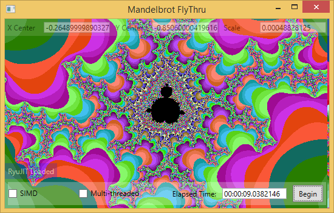
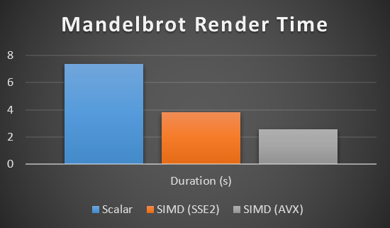

Hardware Intrinsics in .NET Core
Vài năm trước, chúng tôi đã quyết định là hỗ trợ mã SMID trong net. Mình giới thiệu giá trị System.Numerics không gian với Vector2, Vector3, Vector4, Vector<T>, và các loại liên quan.
SIMD is a technology that employs data parallelization at the CPU level.
Multi-threading and SIMD complement each other: multi-threading allows
parallelizing work over multiple cores while SIMD allows parallelizing
work within a single core.
Tạm dịch : SIMD là một công nghệ sử dụng song song dữ liệu ở cấp độ CPU.
Đa luồng và SIMD bổ sung cho nhau: đa luồng cho phép 'parallelizing = song song'
làm việc trên nhiều lõi trong khi SIMD cho phép 'parallelizing = song song' làm việc
trong một lõi duy nhất.
Here is example how I would use to
// Initalize some vectors
Vector<float> values = GetValues(); //Giảm
Vector<float> increment = GetIncrement(); //Tăng
// The next line will leverage SIMD to perform the
// addition of multiple elements in parallel:
Vector<float> result = values + increment; //Tăng + Giảm = KẾT QUẢ
C# and SIMD
It would be great if C# compller and .Net JIT compiler utillze SIMD instructions of current and future processors. The projects that require heavy calculations (MathDotNet.Numerices for example) would greatly benefit from this feature.
 
What are hardware intrinsics (Tạm dịch: Bản chất Hadware là gì?)
In .NET Core 3.0, we added a new feature called hardware intrinsics. Hardware intrinsics provide access to many of these hardware specific instructions that can’t easily be exposed in a more general-purpose mechanism ( general-purpose mechanism = cơ chế mục đích chung ).
The new intrinsics and supporting types are exposed under the System.Runtime.Intrinsics namespace. For .NET Core 3.0 there currently exists one namespace: System.Runtime.Intrinsics.X86. We are working on exposing hardware intrinsics for other platforms, such as System.Runtime.Intrinsics.Arm.
An example of such an algorithm might look like the following:
public int Sum(ReadOnlySpan<int> source)
{
int result = 0; //kết quả trả 0
for (int i = 0; i < source.Length; i++) //nếu i hơn chiều dài
{
result += source[i]; //tính kết quả chiều dài
}
return result; //kết quả
}